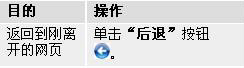

查看网页的一个小问题
#1 查看网页的一个小问题作者：以和为贵 发表时间：2011-8-19 9:24:18
众所周知，查看 Internet Explorer 最近访问过的网页有一个简捷的方法，如图：
我使用的是IE8浏览器，只要是打开带有动态棋谱的网页就不能正常使用页面返回功能，每次点动只是刷新棋谱页面而不是退回到上一个页面，不知道是我个人电脑的原因还是程序的一个小BUG，烦程序管理员百忙之中抽空看下，多谢！
目前我解决此类问题的方法是退出当前页面重新打开上一个网页，虽然稍微麻烦一点，但不影响正常查阅。
［此帖子已被 以和为贵 在 2011-8-19 9:25:49 编辑过］
#2 Re:查看网页的一个小问题作者：风趣幽默 发表时间：2011-8-19 9:38:02
你这个问题我也问过有志，他说有棋谱的都是这样，正在想办法解决#3 Re:查看网页的一个小问题作者：小元 发表时间：2011-8-19 10:43:27
应该可以的吧